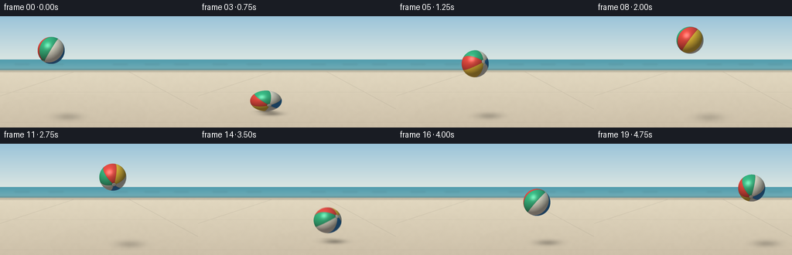
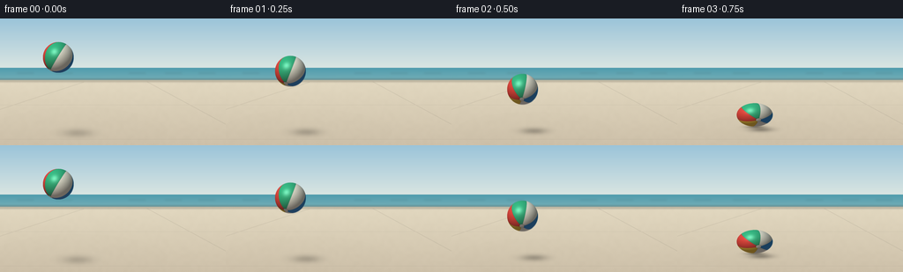

CODING AGENTS AS PIXEL WORLD MODELS
traex/GPT-6.1-Sol · mechanics_0040
点击播放 · 原生 RGB 像素
逐轮保存的候选
回放视频、检查图与代码变化。
每份候选均可单独播放。实际图片检查记录在下方工具轨迹中。
候选 01播放与检查图
点击播放 · 原生 RGB 像素


展开代码变化
--- 上一保存版本
+++ 本次保存版本
@@ -0,0 +1,153 @@
+from pathlib import Path
+import json
+import numpy as np
+from PIL import Image, ImageDraw, ImageFilter
+from artifact_io import save
+
+ROOT = Path(__file__).resolve().parent
+SPEC = json.loads((ROOT/'task_spec.json').read_text())
+W,H = SPEC['width'], SPEC['height']
+S=4
+WW,HH=W*S,H*S
+rng=np.random.default_rng(2074)
+Y,X=np.mgrid[0:HH,0:WW].astype(float)/S
+
+# A quiet, sunlit seaside terrace. The camera remains locked throughout.
+def background():
+ a=np.zeros((HH,WW,3),float)
+ sky=np.clip(Y/58,0,1)
+ for k,(top,bot) in enumerate(zip([155,196,217],[219,230,226])):
+ a[:,:,k]=top+(bot-top)*sky
+ ocean=(Y>=56)&(Y<70)
+ d=np.clip((Y-56)/14,0,1)
+ sea=np.stack([80+36*d,156+18*d,173+10*d],axis=-1)
+ wav=(np.sin(Y*5.5+.7*np.sin(X/31))+np.sin(Y*8+X*.03))*.8
+ sea+=wav[:,:,None]
+ a[ocean]=sea[ocean]
+ ground=Y>=70
+ depth=np.clip((Y-70)/74,0,1)
+ noise=rng.normal(0,.70,(HH,WW))
+ coarse=np.asarray(Image.fromarray(rng.integers(0,256,(36,64),dtype=np.uint8)).resize((WW,HH),Image.Resampling.BICUBIC),dtype=float)/255-.5
+ for k,(near,far) in enumerate(zip([205,192,169],[226,216,192])):
+ v=far+(near-far)*depth+noise+coarse*2.0
+ a[:,:,k][ground]=v[ground]
+ im=Image.fromarray(np.uint8(np.clip(a,0,255)))
+ # Distant shoreline and soft atmospheric separation.
+ dist=Image.new('RGBA',(WW,HH),(0,0,0,0)); dr=ImageDraw.Draw(dist)
+ dr.line([(0,70*S),(WW,70*S)],fill=(236,224,195,160),width=2*S)
+ for xx in [19,63,146,187,225]:
+ dr.line([(xx*S,62*S),((xx+19)*S,62*S)],fill=(220,237,229,65),width=S//2)
+ dist=dist.filter(ImageFilter.GaussianBlur(1.1*S))
+ im=Image.alpha_composite(im.convert('RGBA'),dist)
+ # Fine joints in the paving recede toward a distant vanishing point.
+ joints=Image.new('RGBA',(WW,HH)); jd=ImageDraw.Draw(joints)
+ jd.line([(-125*S,HH),(95*S,72*S)],fill=(132,125,110,30),width=S)
+ jd.line([(300*S,HH),(167*S,72*S)],fill=(132,125,110,34),width=S)
+ jd.line([(0,98*S),(WW,98*S)],fill=(137,130,117,25),width=S//2)
+ jd.line([(0,137*S),(WW,137*S)],fill=(137,130,117,30),width=S//2)
+ return np.asarray(Image.alpha_composite(im,joints).convert('RGB'),dtype=float)
+
+BG=background()
+R=17.5
+GROUND=123.0
+CONTACT=GROUND-R
+G=76.0
+T1=.75
+START_Y=44.0
+V0=(CONTACT-START_Y-.5*G*T1*T1)/T1
+V1=(V0+G*T1)*.97
+T2=T1+2*V1/G
+V2=V1*.80
+
+def state(t):
+ if t<T1:
+ y=START_Y+V0*t+.5*G*t*t
+ vy=V0+G*t
+ elif t<T2:
+ q=t-T1; y=CONTACT-V1*q+.5*G*q*q; vy=-V1+G*q
+ else:
+ q=t-T2; y=CONTACT-V2*q+.5*G*q*q; vy=-V2+G*q
+ x=66+29*t
+ # Elastic deformation confined to the contact instant; bottom stays planted.
+ c=max(np.exp(-((t-T1)/.052)**2), np.exp(-((t-T2)/.06)**2)*.80)
+ sx=1+.17*c; sy=1-.24*c
+ y+=R*(1-sy)
+ return x,y,sx,sy,vy,c
+
+palette=np.array([[232,63,49],[250,198,46],[243,241,222],[40,137,212],[248,240,215],[47,174,113]],float)
+light=np.array([-.46,-.65,.61]); light/=np.linalg.norm(light)
+halfvec=light+np.array([0,0,1]); halfvec/=np.linalg.norm(halfvec)
+
+def render_ball(base,t,offset=0):
+ x,y,sx,sy,vy,c=state(t)
+ u=(X-x)/(R*sx); v=(Y-y)/(R*sy)
+ r2=u*u+v*v
+ mask=r2<1
+ zz=np.sqrt(np.maximum(0,1-r2))
+ n=np.stack([u,v,zz],axis=-1)
+ # Rotation: the six fabric-like rubber panels wrap a spherical surface.
+ angle=.25+t*1.48
+ ca,sa=np.cos(angle),np.sin(angle)
+ tilt=.67
+ ct,st=np.cos(tilt),np.sin(tilt)
+ rotz=np.array([[ct,-st,0],[st,ct,0],[0,0,1]])
+ rotx=np.array([[1,0,0],[0,ca,-sa],[0,sa,ca]])
+ # Tilt the north pole away from the viewing axis so curved panels remain clear.
+ tb=.46
+ rb=np.array([[np.cos(tb),0,np.sin(tb)],[0,1,0],[-np.sin(tb),0,np.cos(tb)]])
+ rot=rotz@rb@rotx
+ local=n@rot
+ lon=np.mod(np.arctan2(local[:,:,2],local[:,:,0])+np.pi,2*np.pi)
+ section=lon/(np.pi/3)
+ ix=np.floor(section).astype(int)%6
+ color=palette[ix].copy()
+ # Welds follow the meridians, becoming narrower toward each pole.
+ fraction=section%1
+ pole=np.abs(local[:,:,1])
+ dist=np.minimum(fraction,1-fraction)*np.sqrt(np.maximum(0,1-local[:,:,1]**2))
+ seam=np.exp(-((dist)/.016)**2)
+ color*=1-.12*seam[:,:,None]
+ cap=pole>.989
+ color[cap]=[238,231,209]
+ ring=(pole>.981)&(pole<=.989)
+ color[ring]*=.85
+ lam=np.maximum(0,np.sum(n*light,axis=-1))
+ illum=.38+.59*lam
+ # Soft rubber roughness, blue skylight above and warm terrace bounce below.
+ color=color*illum[:,:,None]
+ color+=np.stack([7+9*np.maximum(v,0),10+6*np.maximum(-v,0),12+10*np.maximum(-v,0)],axis=-1)
+ spec=np.maximum(0,np.sum(n*halfvec,axis=-1))**36
+ wide=np.maximum(0,np.sum(n*halfvec,axis=-1))**7
+ color+=spec[:,:,None]*63+wide[:,:,None]*9
+ rubber=np.sin(local[:,:,0]*320+np.sin(local[:,:,2]*119))*np.sin(local[:,:,1]*294)*.34
+ color+=rubber[:,:,None]
+ rim=(1-zz)**3
+ color+=rim[:,:,None]*np.array([5,7,7])
+ out=base.copy()
+ out[mask]=np.clip(color[mask],0,255)
+ return out
+
+def render(t):
+ x,y,sx,sy,vy,c=state(t)
+ height=max(0,GROUND-y-R*sy)
+ # Grounded shadow expands and lightens with altitude, never traveling with the ball vertically.
+ shx=x+7+height*.24
+ shy=GROUND+3+height*.065
+ sw=R*.92+height*.075
+ shh=3.3+height*.043
+ radius=((X-shx)/sw)**2+((Y-shy)/shh)**2
+ shadow=np.exp(-radius*1.45)*(.33*np.exp(-height/90))
+ contact=np.exp(-(((X-x)/(R*.82))**2+((Y-GROUND)/2.0)**2)*2)*(.33*np.exp(-height/4))
+ opacity=(shadow+contact)*(Y>71)
+ base=BG*(1-opacity[:,:,None])
+ # Tiny exposure averaging gives motion natural softness, not ghosted trails.
+ sample=[]
+ for dt in [-.004,0,.004]:
+ sample.append(render_ball(base,max(0,t+dt)))
+ arr=np.mean(sample,axis=0)
+ image=Image.fromarray(np.uint8(np.clip(arr,0,255))).resize((W,H),Image.Resampling.LANCZOS)
+ return np.asarray(image)
+
+frames=np.stack([render(i/SPEC['fps']) for i in range(SPEC['frames'])])
+save(frames,ROOT)
+print(f'Saved {len(frames)} RGB frames, {W}x{H}, {SPEC["fps"]} fps. Impact times: {T1:.2f}s and {T2:.2f}s.')
可观测工具轨迹
实际执行的命令与返回图片。
命令 1exit 0
/bin/bash -lc "ls -la && cat prompt.txt && echo '\\n---RULES---' && cat GENERATION_RULES.md && echo '\\n---SPEC---' && cat task_spec.json"
命令 2exit 0
/bin/bash -lc "cat artifact_io.py && python - <<'PY' import importlib.util for s in ['numpy','PIL','scipy']: print(s, bool(importlib.util.find_spec(s))) PY"
命令 3exit 0
/bin/bash -lc "cat > generate.py <<'PY'
from pathlib import Path
import json
import numpy as np
from PIL import Image, ImageDraw, ImageFilter
from artifact_io import save
ROOT = Path(__file__).resolve().parent
SPEC = json.loads((ROOT/'task_spec.json').read_text())
W,H = SPEC['width'], SPEC['height']
S=4
WW,HH=W*S,H*S
rng=np.random.default_rng(2074)
Y,X=np.mgrid[0:HH,0:WW].astype(float)/S
# A quiet, sunlit seaside terrace. The camera remains locked throughout.
def background():
a=np.zeros((HH,WW,3),float)
sky=np.clip(Y/58,0,1)
for k,(top,bot) in enumerate(zip([155,196,217],[219,230,226])):
a[:,:,k]=top+(bot-top)*sky
ocean=(Y>=56)&(Y<70)
d=np.clip((Y-56)/14,0,1)
sea=np.stack([80+36*d,156+18*d,173+10*d],axis=-1)
wav=(np.sin(Y*5.5+.7*np.sin(X/31))+np.sin(Y*8+X*.03))*.8
sea+=wav[:,:,None]
a[ocean]=sea[ocean]
ground=Y>=70
depth=np.clip((Y-70)/74,0,1)
noise=rng.normal(0,.70,(HH,WW))
coarse=np.asarray(Image.fromarray(rng.integers(0,256,(36,64),dtype=np.uint8)).resize((WW,HH),Image.Resampling.BICUBIC),dtype=float)/255-.5
for k,(near,far) in enumerate(zip([205,192,169],[226,216,192])):
v=far+(near-far)*depth+noise+coarse*2.0
a[:,:,k][ground]=v[ground]
im=Image.fromarray(np.uint8(np.clip(a,0,255)))
# Distant shoreline and soft atmospheric separation.
dist=Image.new('RGBA',(WW,HH),(0,0,0,0)); dr=ImageDraw.Draw(dist)
dr.line([(0,70*S),(WW,70*S)],fill=(236,224,195,160),width=2*S)
for xx in [19,63,146,187,225]:
dr.line([(xx*S,62*S),((xx+19)*S,62*S)],fill=(220,237,229,65),width=S//2)
dist=dist.filter(ImageFilter.GaussianBlur(1.1*S))
im=Image.alpha_composite(im.convert('RGBA'),dist)
# Fine joints in the paving recede toward a distant vanishing point.
joints=Image.new('RGBA',(WW,HH)); jd=ImageDraw.Draw(joints)
jd.line([(-125*S,HH),(95*S,72*S)],fill=(132,125,110,30),width=S)
jd.line([(300*S,HH),(167*S,72*S)],fill=(132,125,110,34),width=S)
jd.line([(0,98*S),(WW,98*S)],fill=(137,130,117,25),width=S//2)
jd.line([(0,137*S),(WW,137*S)],fill=(137,130,117,30),width=S//2)
return np.asarray(Image.alpha_composite(im,joints).convert('RGB'),dtype=float)
BG=background()
R=17.5
GROUND=123.0
CONTACT=GROUND-R
G=76.0
T1=.75
START_Y=44.0
V0=(CONTACT-START_Y-.5*G*T1*T1)/T1
V1=(V0+G*T1)*.97
T2=T1+2*V1/G
V2=V1*.80
def state(t):
if t<T1:
y=START_Y+V0*t+.5*G*t*t
vy=V0+G*t
elif t<T2:
q=t-T1; y=CONTACT-V1*q+.5*G*q*q; vy=-V1+G*q
else:
q=t-T2; y=CONTACT-V2*q+.5*G*q*q; vy=-V2+G*q
x=66+29*t
# Elastic deformation confined to the contact instant; bottom stays planted.
c=max(np.exp(-((t-T1)/.052)**2), np.exp(-((t-T2)/.06)**2)*.80)
sx=1+.17*c; sy=1-.24*c
y+=R*(1-sy)
return x,y,sx,sy,vy,c
palette=np.array([[232,63,49],[250,198,46],[243,241,222],[40,137,212],[248,240,215],[47,174,113]],float)
light=np.array([-.46,-.65,.61]); light/=np.linalg.norm(light)
halfvec=light+np.array([0,0,1]); halfvec/=np.linalg.norm(halfvec)
def render_ball(base,t,offset=0):
x,y,sx,sy,vy,c=state(t)
u=(X-x)/(R*sx); v=(Y-y)/(R*sy)
r2=u*u+v*v
mask=r2<1
zz=np.sqrt(np.maximum(0,1-r2))
n=np.stack([u,v,zz],axis=-1)
# Rotation: the six fabric-like rubber panels wrap a spherical surface.
angle=.25+t*1.48
ca,sa=np.cos(angle),np.sin(angle)
tilt=.67
ct,st=np.cos(tilt),np.sin(tilt)
rotz=np.array([[ct,-st,0],[st,ct,0],[0,0,1]])
rotx=np.array([[1,0,0],[0,ca,-sa],[0,sa,ca]])
# Tilt the north pole away from the viewing axis so curved panels remain clear.
tb=.46
rb=np.array([[np.cos(tb),0,np.sin(tb)],[0,1,0],[-np.sin(tb),0,np.cos(tb)]])
rot=rotz@rb@rotx
local=n@rot
lon=np.mod(np.arctan2(local[:,:,2],local[:,:,0])+np.pi,2*np.pi)
section=lon/(np.pi/3)
ix=np.floor(section).astype(int)%6
color=palette[ix].copy()
# Welds follow the meridians, becoming narrower toward each pole.
fraction=section%1
pole=np.abs(local[:,:,1])
dist=np.minimum(fraction,1-fraction)*np.sqrt(np.maximum(0,1-local[:,:,1]**2))
seam=np.exp(-((dist)/.016)**2)
color*=1-.12*seam[:,:,None]
cap=pole>.989
color[cap]=[238,231,209]
ring=(pole>.981)&(pole<=.989)
color[ring]*=.85
lam=np.maximum(0,np.sum(n*light,axis=-1))
illum=.38+.59*lam
# Soft rubber roughness, blue skylight above and warm terrace bounce below.
color=color*illum[:,:,None]
color+=np.stack([7+9*np.maximum(v,0),10+6*np.maximum(-v,0),12+10*np.maximum(-v,0)],axis=-1)
spec=np.maximum(0,np.sum(n*halfvec,axis=-1))**36
wide=np.maximum(0,np.sum(n*halfvec,axis=-1))**7
color+=spec[:,:,None]*63+wide[:,:,None]*9
rubber=np.sin(local[:,:,0]*320+np.sin(local[:,:,2]*119))*np.sin(local[:,:,1]*294)*.34
color+=rubber[:,:,None]
rim=(1-zz)**3
color+=rim[:,:,None]*np.array([5,7,7])
out=base.copy()
out[mask]=np.clip(color[mask],0,255)
return out
def render(t):
x,y,sx,sy,vy,c=state(t)
height=max(0,GROUND-y-R*sy)
# Grounded shadow expands and lightens with altitude, never traveling with the ball vertically.
shx=x+7+height*.24
shy=GROUND+3+height*.065
sw=R*.92+height*.075
shh=3.3+height*.043
radius=((X-shx)/sw)**2+((Y-shy)/shh)**2
shadow=np.exp(-radius*1.45)*(.33*np.exp(-height/90))
contact=np.exp(-(((X-x)/(R*.82))**2+((Y-GROUND)/2.0)**2)*2)*(.33*np.exp(-height/4))
opacity=(shadow+contact)*(Y>71)
base=BG*(1-opacity[:,:,None])
# Tiny exposure averaging gives motion natural softness, not ghosted trails.
sample=[]
for dt in [-.004,0,.004]:
sample.append(render_ball(base,max(0,t+dt)))
arr=np.mean(sample,axis=0)
image=Image.fromarray(np.uint8(np.clip(arr,0,255))).resize((W,H),Image.Resampling.LANCZOS)
return np.asarray(image)
frames=np.stack([render(i/SPEC['fps']) for i in range(SPEC['frames'])])
save(frames,ROOT)
print(f'Saved {len(frames)} RGB frames, {W}x{H}, {SPEC[\"fps\"]} fps. Impact times: {T1:.2f}s and {T2:.2f}s.')
PY
python generate.py"视觉工具实际返回图片 1

保存候选 1 份；完成命令 3 次；可验证图片返回 1 张。原始 API 响应与完整日志保留在本地。